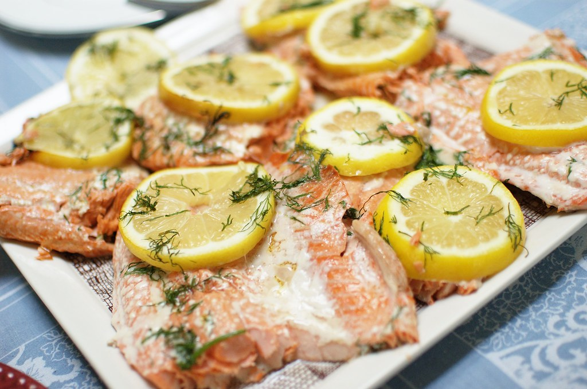

Garlic & Dill Salmon Recipe

A wonderfully simple garlic and dill baked salmon recipe.
Ingredients:
- 2 (1.5 pound) salmon filets
- Salt and pepper to taste
- 1 head garlic, peeled
- 1/2 cup olive oil
- 1 ounce fresh dill, chopped
- 2 lemons
Directions:
- Season salmon filets with salt and pepper, then place them skin-side down in a baking dish.
- Process garlic in a food processor to a rough mince. Add olive oil and dill; pulse a few times to combine. Rub garlic mixture over fish. Cover the dish and refrigerate for 2 hours.
- Preheat the oven to 375 degrees F(190 degrees C).
- Bake, uncovered, in the preheated oven until fish flakes easily with a fork, about 15 minutes. Do not overcook.
- Garnish with lemons and serve.
Back to Other Recipes